macOS - Local-first - No subscription
Train Solo is a desktop app for self-directed lifters. It builds your program, tracks your weights, adapts to your progress, and shows you exactly what it is doing - and why.
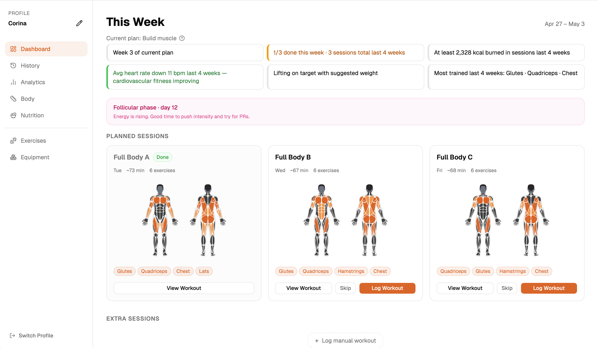
Is this for you?
Most self-directed lifters know how to train. What they are missing is knowing what to do today, whether it is working, and when to change something.
Transparent by design
Most apps that adapt your training do it invisibly. You get a recommendation with no idea where it came from or whether to trust it.
Train Solo works differently. The planning engine has explicit rules - about how much to increment on a leg exercise versus a shoulder exercise, about when you have genuinely plateaued versus just had a rough session, about how to balance volume across muscle groups.
For every exercise in your workout, a question mark shows you exactly why that weight and rep target were chosen - what the engine saw, what decision it made, and what it will take to move up. You are always in control. You can override a suggestion, swap an exercise, or ignore a warning.
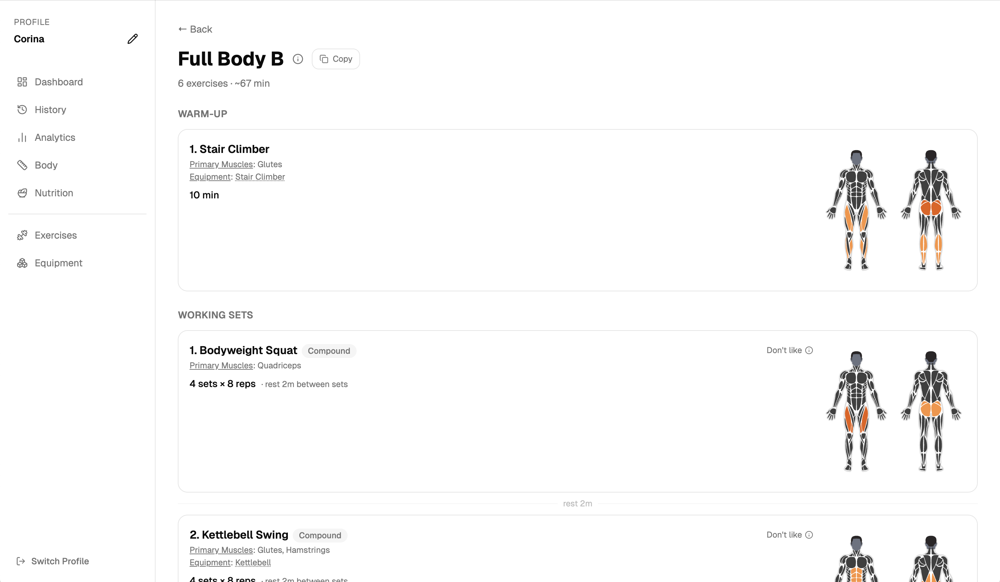
Transparent weight targets for every exercise - before you even step into the gym.
What it does
Based on your goal, experience, split, equipment, and training style. Exercises that match what you have and what you can do - with progression that carries over from previous cycles.
Rep-first progression. Hit your rep target across all sets -> weight goes up. Fell short -> holds and aims for more reps. Fell well short -> backs off. Calibrated by muscle group.
Stuck at the same weight for several weeks? The app flags it and suggests a swap - same muscles, same equipment, not just a cosmetic variation.
Compound movements stay consistent so progression carries over. Isolation and accessory exercises rotate each cycle to keep the stimulus fresh.
Sets, reps, and volume by muscle group - across the last month, your current plan, or all time. A body diagram makes it easy to spot what is getting ignored.
More than one person using the same machine? Each profile has its own program, history, and preferences. Fully separate.
In the gym
Before you leave for the gym, copy your session to clipboard - a compact list of exercises, sets, and weights. Paste it into your notes app and you are done. Log back in the app after, which takes seconds because targets are already filled in.
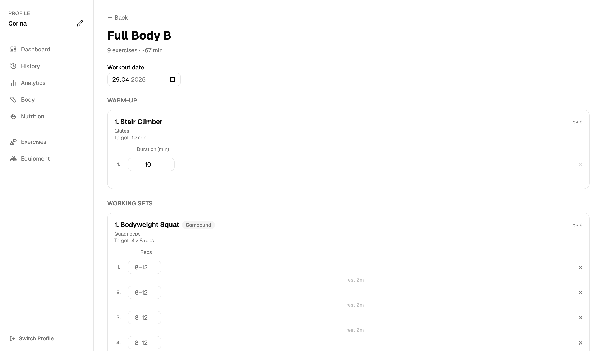
Targets are pre-filled from the planning engine. You adjust to what you actually lifted. Sets are colour-coded against suggestions after - green for above, red for below.
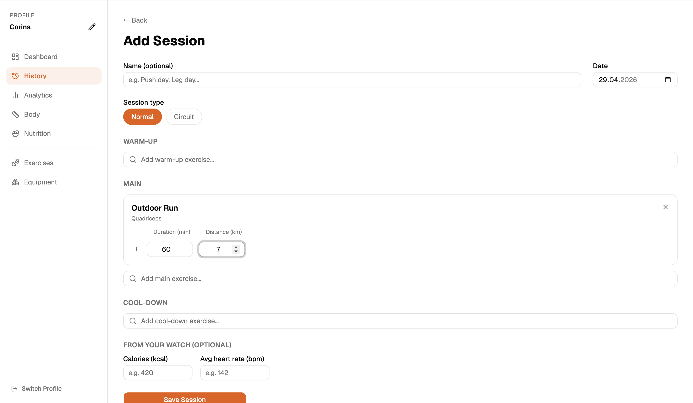
Log extra sessions outside the program at any time. The app shows a hint with the last weight and reps you used - even across previous programs.
Analytics
Estimated 1RM, max weight, and total volume per exercise over time. Training load by muscle group. A body diagram showing imbalances. Stagnation warnings at a glance.
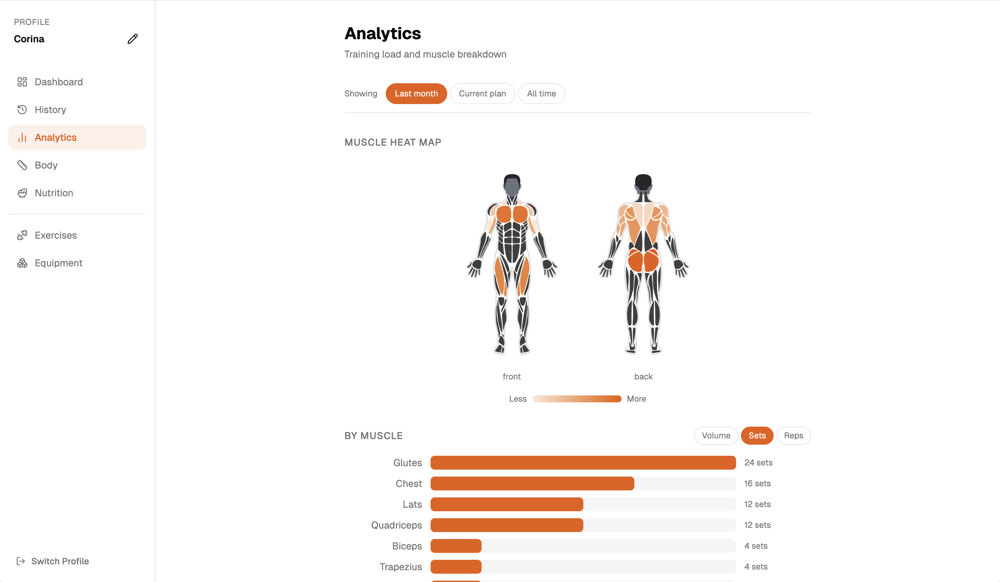
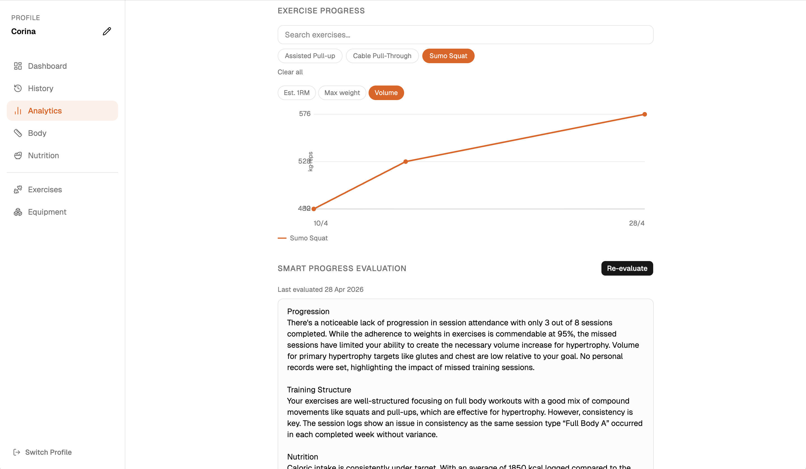
Setup
Goal, experience level, split, training style, equipment, optional muscle focus. The app generates a full weekly program that fits your situation - not a generic template.
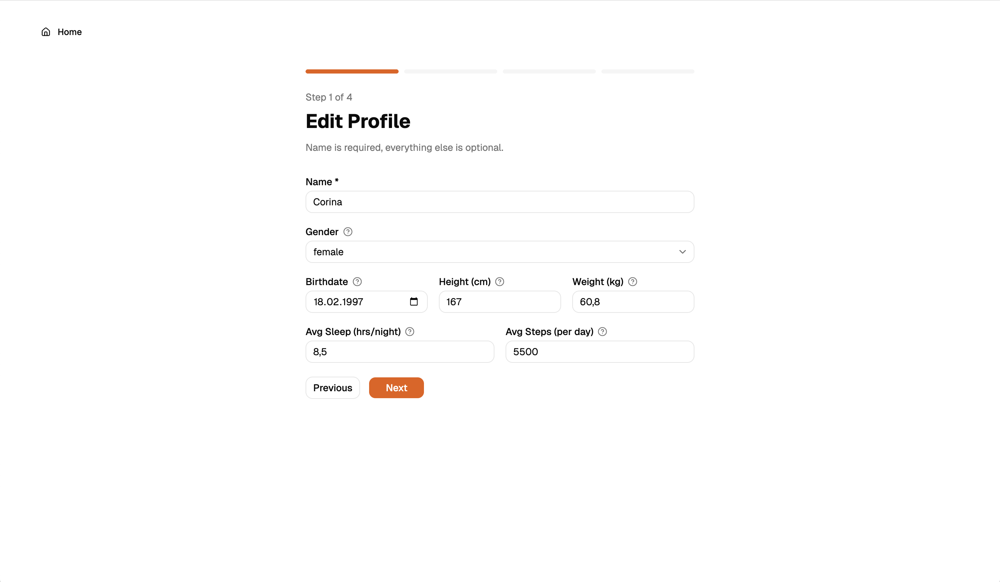
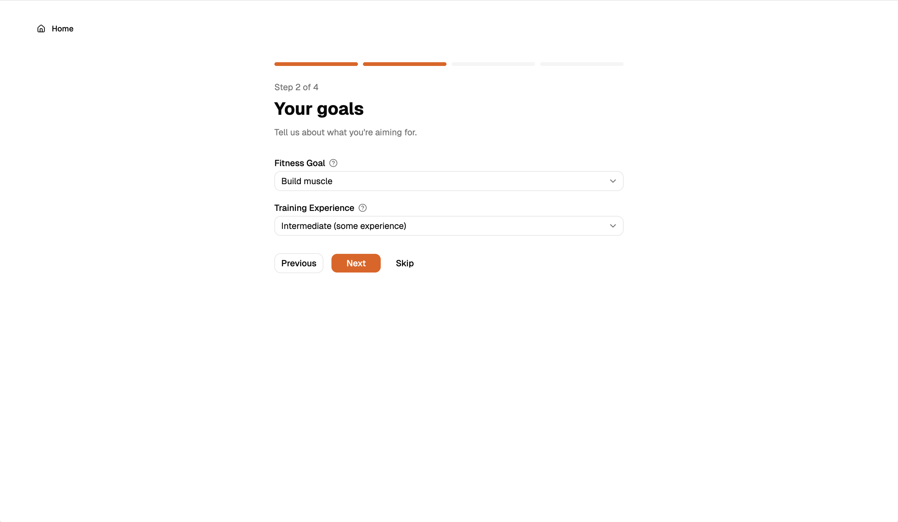
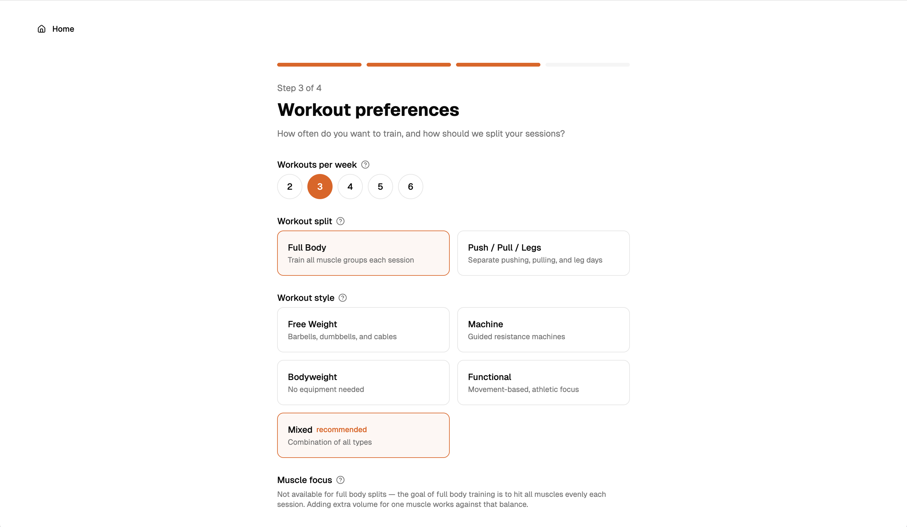
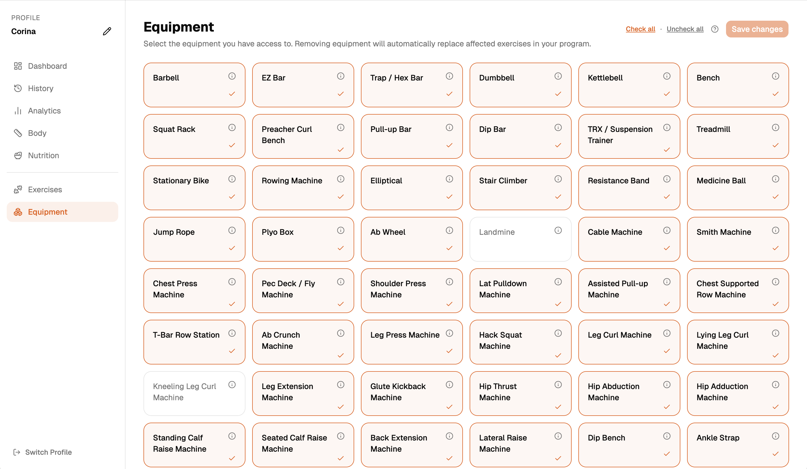
History & measurements
Sessions grouped by week, colour-coded against suggestions. Body measurements over time - weight, arms, chest, waist, hips, thighs, calves, neck. Menstrual cycle tracking for female users, feeding into the smart evaluation.
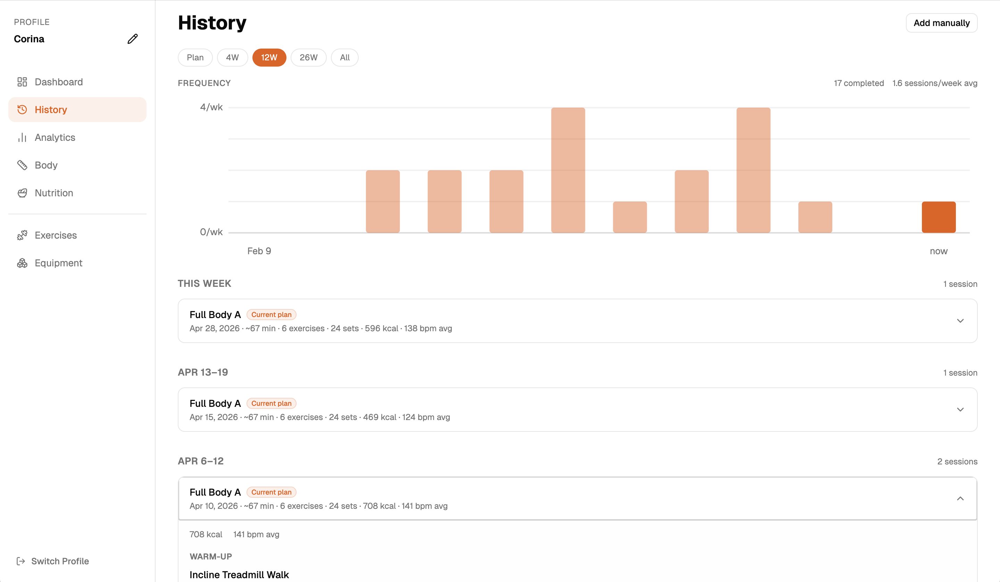
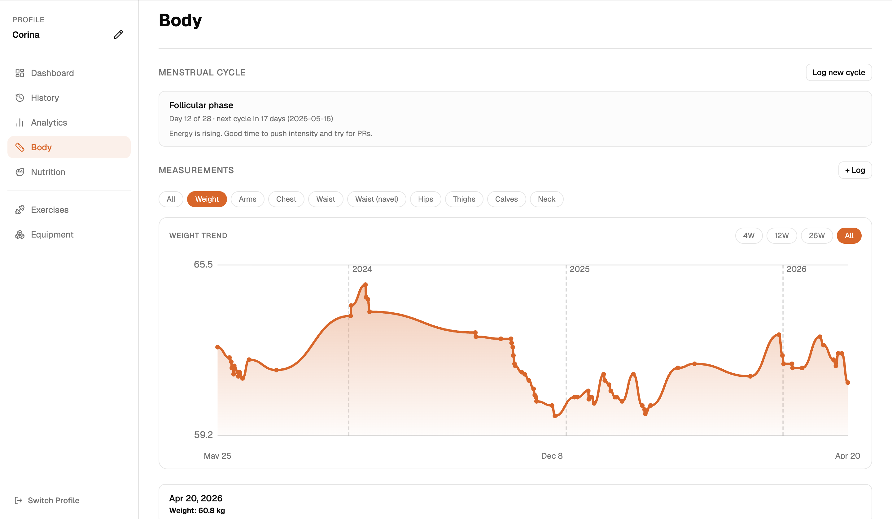
Nutrition
A lightweight log to stay aware of whether your eating supports your training goal - not a calorie counting app. Log calories, macros, what you ate, and any notes. The app computes an estimated daily target from your profile and shows your average alongside it.
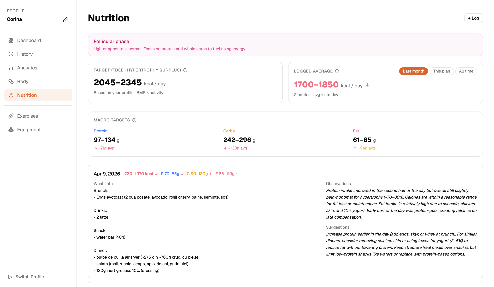
Smart progress evaluation - Optional
Connect your own AI API key and the app can run a written coaching evaluation of your training over the current plan period. It pulls together session completion, adherence to suggested weights, volume by muscle group, personal records, calorie and heart rate data, body measurements, nutrition logs, and menstrual cycle context - and reasons across all of it.
It connects signals: if your calorie intake dropped in the same weeks your session output fell, it says so. It closes with concrete adjustments for the next two weeks.
You supply your own key - no subscription, no gatekeeping, no markup. The key is stored locally and only sent when you trigger an evaluation.
Deliberate omissions
If you need to learn how to do an exercise, you are going to end up on YouTube watching your favourite lifters anyway. The library tells you what muscles each exercise hits and what equipment it needs. The how is on you.
Everything you need in the gym is a compact list of exercises, sets, and weights - copy it to your clipboard. The main value of the app is on a bigger screen where you can actually see and understand your data.
No sharing, no leaderboards, no following other people. You are training solo. The app is built around that.
The planning engine has explicit, inspectable rules. A model generating your program would make that opaque. The AI feature is reserved for evaluation after the fact - not for making decisions the engine already handles well.
Precise calorie counting is a different discipline. The nutrition log is there to stay aware of whether your eating broadly supports your training - not to account for every gram.
Privacy
Download
macOS only. No account required. Free.
Train Solo is not signed with an Apple Developer certificate. macOS will show an "app is damaged" warning and block it. Open Terminal and run the command below, then launch the app normally.
.dmg file and drag Train Solo into your Applications folder.Cmd+Space) and paste this command: